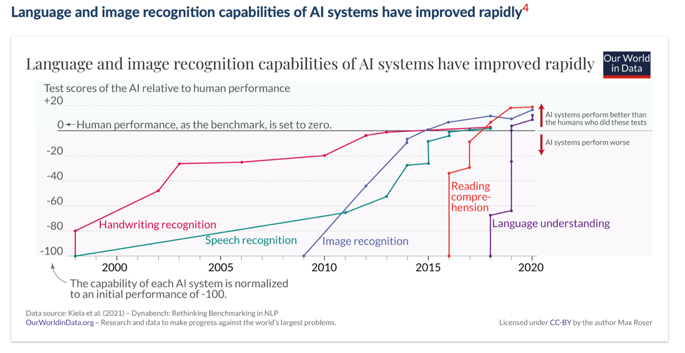

install.packages("openai") ## au besoin
library(openai)9 Outils d’intelligence artificielle
Ce chapitre vise à initier les lecteurs à ce qu’est l’intelligence artificielle (IA), aux enjeux qu’elle engendre ainsi qu’à son potentiel pour les sciences sociales. Nous souhaitons d’abord et avant tout mener les lecteurs vers la réflexion. Dans ces pages, il y a beaucoup plus de questions que de réponses. Cet état de fait reflète bien l’état de la connaissance que nous avons sur l’IA. Nous sommes aussi bien loin d’être des spécialistes en la matière. Malgré cela, nous pensons qu’initier la réflexion et la discussion s’impose. Se poser des questions et tenter de trouver des réponses ne peut que générer des bénéfices. Par conséquent, si ce chapitre aura permis d’éclairer certains enjeux, ou s’il stimulera davantage de questionnement, alors nous aurons réussi notre objectif.
Nous débutons par définir et expliquer ce qu’est l’intelligence artificielle. Bien que ça ne soit pas une tâche facile, nous souhaitons simplement donner une idée générale de ce qu’il s’agit. Ensuite, nous souhaitons mettre l’accent sur l’évolution constante de ce champ de recherche, ainsi que les défis que ça pose. La section suivante se penche sur certains enjeux éthiques lié à l’utilisation de l’IA, notamment en ce qui concerne le plagiat. Cela nous mène à se questionner sur la place du chercheur, aujourd’hui et dans le futur, avec l’arrivé de ces nouvelles technologies. La dernière section se penchera sur la place de cette technologie en sciences sociales. Quel usage pourrait-on en faire, et surtout quels en sont les limites.
9.1 Définition et différents type d’IA
Qu’est-ce que l’intelligence artificielle (IA)? Est-ce quelque chose d’homogène, ou s’agit-il plutôt « des intelligences artificielles »? Dans un premier temps, il est important de préciser que l’intelligence artificielle est un champ d’études (Devedzic 2022). Par conséquent, il s’agit d’un ensemble d’objets, relativement vaste et en constante expansion, qui s’intéressent, à sa façon, à l’intelligence artificielle. Pour préciser ce propos, prenons l’exemple de la science politique. Malgré la formulation au singulier, la science politique est un grand ensemble de différents sous-champs d’études, qui ont chacun leur propre objet d’intérêt. La philosophie politique, les relations internationales, la politique comparée et l’étude de l’opinion publique, par exemple, sont tous des sous-champs qui s’intéressent, à leur façon, au phénomène politique. Dans le même sens, et compte tenu de cette pluralité de perspectives, il est important de noter qu’il n’y a pas de consensus dans la définition de l’IA (Wang 2019 ; König et al. 2022). De plus, la rapidité du développement de ce champ rend le traçage de frontières définitionnelles plutôt difficile : comment définir, d’une manière précise et consensuelle, quelque chose qui évolue constamment (Devedzic 2022 ; Bertolini 2020, 15)?
Deux définitions de l’IA peuvent tout de même être retenues. La première vient de John McCarthy (2007, 2) : « Il s’agit de la science et de l’ingénierie qui consistent à créer des machines intelligentes1, en particulier des programmes informatiques intelligents. Elle est liée à la tâche similaire consistant à utiliser des ordinateurs pour comprendre l’intelligence humaine, mais l’IA ne doit pas se limiter aux méthodes qui sont biologiquement observables. » [Traduction DeepL] La seconde définition provient de la compagnie IBM (2023a) : « Dans sa forme la plus simple, l’intelligence artificielle est un domaine qui combine l’informatique et des ensembles de données robustes pour permettre la résolution de problèmes. Elle englobe également les sous-domaines de l’apprentissage automatique et de l’apprentissage profond, qui sont souvent mentionnés en conjonction avec l’intelligence artificielle. Ces disciplines sont composées d’algorithmes d’IA qui cherchent à créer des systèmes experts qui font des prédictions ou des classifications basées sur des données d’entrée. » [Traduction DeepL] Ces extraits permettent de comprendre que l’IA consiste à reproduire artificiellement certaines capacités cognitives humaines, afin de rendre les machines « intelligentes » en leur donnant la capacité de résoudre des problèmes par elles-mêmes.
Ces définitions restent toutefois à préciser, notamment dans le champ d’application de l’IA : qu’en est-il concrètement ? Comment est-ce utilisé ? Comment ça fonctionne ? Si l’IA se distingue enn plusieurs types, en faire la liste et identifier leurs différentes branches et applications possibles serait fastidieux et s’écarterait de l’objectif de ce chapitre introductif. Cependant, pour ceux désirant en savoir plus sur le sujet, les articles de McCarthy (2007) et de Hanchen et al. (2023), ainsi que le Cambridge Handbook of Artificial Intelligence (König et al. 2022) sont très riches et illustratifs sur ce qu’est l’IA ainsi que sur ses champs d’applications.
Avant toute chose, il est important de distinguer l’IA général (strong) du précis (narrow). Le premier, et le moins populaire en nombre de recherches et d’applications, cherche à développer une machine qui aurait les mêmes capacités cognitives que l’humain, non seulement en termes de résolution de problème, d’apprentissage et de planification, mais aussi qui serait dotée d’une conscience de soi (IBM 2023a ; König et al. 2022). Le deuxième est plus restrictif, se limitant à la réalisation d’un ou de plusieurs objectifs spécifiques. De ces deux visées, il y a trois principaux champs de recherche qui se penchent sur les méthodes de fonctionnement de l’IA : l’apprentissage machine (machine learning), les réseaux neuronaux artificiel (artificial neural networks) ainsi que l’apprentissage profond (deep learning).
L’apprentissage machine : « […] consiste à programmer des ordinateurs pour optimiser un critère de performance à l’aide de données d’exemple ou d’expériences passées. Nous avons un modèle défini jusqu’à certains paramètres, et l’apprentissage est l’exécution d’un programme informatique pour optimiser les paramètres du modèle à l’aide des données d’entraînement ou de l’expérience passée. » [Traduction DeepL] (Alpaydin et Bach 2014, 3). Le but est d’entraîner le modèle afin qu’il puisse reconnaître des tendances, et qu’il puisse décrire et/ou faire des prédictions à partir de ces tendances (Alpaydin and Bach 2014, 3). Il est le champ le plus populaire dans la recherche faite sur l’IA, notamment parce qu’il constitue une base importante pour les autres recherches dans le domaine (Devedzic 2022).
Ensuite, un sous-champ de l’apprentissage machine, l’apprentissage profond : « […] fait référence à un réseau neuronal composé de plus de trois couches […]. L’apprentissage en profondeur automatise une grande partie de l’extraction des caractéristiques, éliminant ainsi une partie de l’intervention humaine manuelle nécessaire et permettant l’utilisation d’ensembles de données plus importants. Il peut ingérer des données non structurées dans leur forme brute et déterminer automatiquement la hiérarchie des caractéristiques qui distinguent les différentes catégories de données les unes des autres, ne nécessitant pas d’intervention humaine. » [Traduction DeepL] (IBM 2023a). Ainsi, l’apprentissage profond permet une certaine forme d’automatisation des tâches demandées à l’IA, en lui fournissant les capacités nécessaires d’apprendre par lui-même pour corriger et améliorer son fonctionnement. Pour ce faire, on doit développer des structures neuronales artificielles, qui s’inspirent des neurones du cerveau humain.
C’est d’ailleurs la tâche de ceux qui s’intéressent aux réseaux neuronaux artificiels : « Les réseaux neuronaux artificiels (RNA) sont constitués d’une couche de nœuds, contenant une couche d’entrée, une ou plusieurs couches cachées et une couche de sortie. Chaque nœud, ou neurone artificiel, se connecte à un autre et possède un poids et un seuil associés. Si la sortie d’un nœud individuel est supérieure à la valeur seuil spécifiée, ce nœud est activé et envoie des données à la couche suivante du réseau. Dans le cas contraire, aucune donnée n’est transmise à la couche suivante du réseau. » [Traduction DeepL] (IBM 2023b). Ainsi, le but est de reproduire les structures cognitives humaines, afin de permettre à l’IA d’accomplir des tâches plus complexes. L’une des principales utilités de ce sous-champ est qu’il permet d’augmenter la rapidité du classement de données ; la reconnaissance vocale ou d’image, par exemple, ne prend que quelques minutes grâce à cela, contrairement à plusieurs heures lorsque fait par des humains (IBM 2023b).
9.2 L’évolution constante de l’IA
Plusieurs chercheurs, dont le professeur Yoshua Bengio de l’Université de Montréal, ont lancé plusieurs avertissements sur le développement de l’IA, notamment à cause de la rapidité de son évolution. Dans un article paru dans The Economist, M. Bengio (2023) nous dit qu’il prévoyait le développement d’une IA avec des capacités similaires à celles de l’humain d’ici quelques décennies, peut-être un siècle. Depuis l’arrivée de ChatGPT-4, celui-ci a revu sa prédiction pour la situer entre quelques années et quelques décennies (Bengio 2023). Dans les dix dernières années seulement, les systèmes de reconnaissance d’images et de langages en sont venus à dépasser les capacités humaines (Roser 2022). La figure 1 présente cette évolution.

Comme on le remarque, cette évolution ne suit pas une trajectoire linéaire. Depuis 2015, la plupart de ces technologies ont évolué de manière quasi-exponentielle. Cette progression fulgurante nous permet de faire quelque constat pour appréhender l’évolution future. Ce qui est intéressant de la recherche dans ce domaine, c’est que le développement des capacités de l’IA permet, en retour, de la développer encore plus rapidement. L’IA peut rendre l’IA exponentiellement plus puissante (Harari 2023). Elle est capable de se faire évoluer à une vitesse plus grande, grâce à ses capacités de traitement de données et d’auto-améliorassions, que si elle était uniquement dépendante de l’humain.
En tant que chercheur en sciences sociales, pourquoi devrait-on être préoccupé par le développement de l’IA? Tout d’abord, il est intéressant de commencer à réfléchir ainsi qu’à analyser les différents impacts que l’IA a sur nos sociétés. Les avancés dans le domaine en plus de l’accessibilité à ces technologies, tel que Large Language Model (LLM), en font de nouveaux objets d’étude actuel, et surtout sans grandes réponses. Yuval Noah Harrari (2023), historien et philosophe, explique dans un article que la capacité de l’IA à manipuler ainsi qu’à générer du langage en font des outils puissants qui ont le potentiel d’avoir de profond impact sur nos civilisations. Par conséquent, l’étude des effets de l’IA sur nos sociétés devient un nouveau sujet de recherche dont tous les champs des sciences sociales et sciences humaines ont intérêt à se pencher. Présentement, il est anticipé que cette technologie puisse être utilisée pour « générer et partager de fausses informations, érodant la confiance sociale et la démocratie; pour surveiller, manipuler et maîtriser les citoyens, nuisant aux libertés individuelles et collectives; ou pour créer de puissantes armes physiques ou digitales qui menaceraient la vie humaine. » [Traduction libre] (Bremmer and Suleyman 2023, 32). Compte tenu des conséquences potentielles que ces technologies peuvent avoir sur le monde social, tous les domaines scientifiques ont un fort incitatif à décloisonner leur savoir et leurs analyses, en plus de maximiser l’interdisciplinarité et la recherche collaborative. Une compréhension plus complète de ces changements ainsi qu’une communication de ce savoir ne pourra que générer des bénéfices pour le monde académique, social et politique.
9.3 Défis et enjeux éthiques de l’IA, focus sur ChatGPT
En tant qu’étudiant, professeur, professionnel ou chercheur, il faut se questionner par rapport à notre propre utilisation des différents outils de l’IA. Tout d’abord, il est important de comprendre qu’il y a plus de questions que de réponses pour l’instant. Face à ce constat, nous n’avons pas la prétention d’être en mesure de cibler toutes les questions qui émergent actuellement, et encore moins d’avoir les réponses. Cependant, cela ne justifie pas pour autant d’être passif. Nous devons essayer d’être réflexifs et critiques dans la limite de nos capacités et de nos connaissances. En ce sens, les étudiants et les enseignants doivent aussi être proactifs en entreprenant les démarches nécessaires ainsi qu’en s’engageant dans la réflexion.
Dans un premier temps, un bon usage de ces outils débute avec une bonne réflexion quant à leur utilisation. Par conséquent, les universités constituent des endroits privilégiés pour favoriser les discussions et les réflexions quant à l’utilisation de ces technologies. D’ailleurs, certaines universités se sont déjà dotées de lignes directrices quant à l’utilisation de robots conversationnels et de l’IA générative2. Nous sommes d’avis que chaque université aurait intérêt à se doter de tel document, afin de fournir les ressources nécessaires aux étudiants ainsi qu’aux membres du corps professoral dans leur utilisation de ces outils. L’accompagnement et l’encadrement dans l’exploration et l’utilisation de l’IA nous paraissent être une bonne stratégie à adopter afin de permettre le développement de bonnes pratiques.
Actuellement, un enjeu majeur, surtout avec les robots conversationnels, est le plagiat. Notre but ici est de présenter les différentes ressources qui s’offrent aux lecteurs pour qu’ils puissent développer les bonnes pratiques d’utilisation de ces outils tout en restant intègres. Pour ce faire, nous présenterons dans les paragraphes suivants les bonnes pratiques de citation selon l’American Psychological Association et The Chicago Manual of Style. Avant cela, il est important de spécifier que notre point de vue, et les propos tenus dans ce livre, ne remplace en aucun cas les règlements disciplinaires et/ou codes de conduite établis par une institution académique quelconque. Par conséquent, nous invitons fortement les lecteurs à consulter les sites web de ces associations, à se référer aux personnels appropriés pour toutes questions relatives à l’utilisation de texte généré par l’IA ainsi qu’à tout document relatif au plagiat produit par l’institution académique fréquentée. Passons maintenant à la présentation de ces manuels de style.
L’American Psychological Association (APA) encourage les utilisateurs à être transparents quant à leur utilisation de logiciels tel que ChatGPT. Lorsqu’utilisés, les chercheurs devraient spécifier clairement qu’ils ont utilisé le logiciel, en plus de décrire comment ils ont utilisé le logiciel, quel prompt ont-ils utilisé et quel a été le résultat en plus de fournir des extraits textuels (McAdoo 2023). Il est recommandé de documenter chaque utilisation. Se créer un document qui inclue la date d’utilisation, la question demandée ainsi que la réponse obtenue doit faire partie des bonnes pratiques de chacun. Ces éléments peuvent être ajoutés en annexe au besoin (McAdoo 2023). Sans grande surprise, il est impératif de citer l’auteur lorsqu’on utilise des idées qui ne sont pas les nôtres. Dans le cas de robots conversationnels, nous devons citer le développeur (McAdoo 2023). Par exemple, pour une citation de ChatGPT, il faudra référer à OpenAI, soit le développeur du logiciel.
Utilisons un exemple concret afin d’illustrer le tout. Supposons que je m’intéresse au concept du totalitarisme, mais que je n’ai pas une compréhension claire de ce que ça signifie. Je pourrais utiliser ChatGPT pour me fournir une définition du concept. Si je souhaite l’inclure dans mon travail, je procèderais de la façon suivante : nous avons utilisé ChatGPT afin de nous donner une définition du totalitarisme. Pour ce faire, nous lui avons posé la question suivante : « Qu’est-ce que le totalitarisme? ». Le logiciel nous a fourni la définition suivante : « Le totalitarisme est un système politique et idéologique caractérisé par un contrôle absolu et centralisé du gouvernement sur tous les aspects de la vie publique et privée d’une société. Dans un régime totalitaire, le gouvernement exerce un pouvoir autoritaire et oppressif, limitant sévèrement les libertés individuelles, supprimant les droits de l’homme, et éliminant ou réprimant toute opposition ou critique. » (OpenAI 2023)
En bibliographie, la référence serait insérée comme suit, et ensuite j’irai insérer la question et la réponse complète en annexe3.
OpenAI. (2023). ChatGPT (Version du 3 août 2023) [Large Language Model]. https://chat.openai.com/auth/login (exemple tiré de McAdoo 2023)
Quant au manuel de style Chicago, il est recommandé de mentionner et d’expliquer que nous avons utilisé ChatGPT pour accomplir une certaine tâche dans notre texte. Toutefois, comme le lien généré lors de l’utilisation individuelle de ChatGPT n’est pas public et ne peut pas être consulté par les autres, il n’est pas recommandé d’insérer la référence en bibliographie.
Toutefois, à moins que la recherche porte directement sur ChatGPT, nous déconseillons fortement d’utiliser uniquement ce que le robot conversationnel fournit comme réponse. Reprenons l’exemple du totalitarisme. Dans ce cas, bien que la définition fournît soit relativement bonne, nous recommandons d’aller consulter des sources académiques afin de trianguler la définition qui a été générée, d’une part, et surtout de présenter une définition qui est reconnue par les pairs scientifiques. Toutefois, pour ce faire, il est possible d’utiliser ChatGPT. Nous pouvons lui demander de nous fournir 5 livres qui portent sur le sujet. À partir de ces recommandations, nous pouvons nous référer directement à ces ouvrages et débuter notre revue des écrits. Surtout, à moins que ce ne soit que pour vous faire une idée du contenue, n’utilisez pas ChatGPT pour résumer un livre et utiliser le résumé pour votre travail! Cette pratique constitue une forme de plagiat. Aller consulter les ouvrages directement plutôt que d’utiliser les définitions fournies par ChatGPT fait partie des bonnes pratiques. De plus, développer un esprit de synthèse est fondamental pour chaque étudiant universitaire, ainsi que pour les futurs chercheurs. Commencez dès maintenant à vous pratiquer pour développer ces capacités. Ne demandez pas à ChatGPT de le faire à votre place.
9.4 Quelle est la place du chercheur maintenant?
Avec l’avènement de l’IA, il est tout à fait raisonnable de se demander quelle est la place du chercheur aujourd’hui. L’avenir du chercheur est-il en danger? Pourrait-on assister au développement des sciences sociales sans chercheur humain derrière? Si tel est le cas, est-ce que ça ne constituerait pas un paradoxe important? Est-ce que la machine est mieux placée pour comprendre la réalité du monde sociale, ainsi que ses mécanismes, que l’humain? D’une part, certains pensent que l’IA risque de générer des « laboratoires autonomes » (Hanchen Wang, Tianfan Fu, Yuanqi Du, Wenhao Gao, Kexin Huang, et al. 2023, 55). Il n’est pas difficile d’imaginer un monde où tout le processus scientifique, de la conception jusqu’à la communication, serait fait par l’IA. Le chercheur perdrait ainsi sa profession, et se limiterait à n’être qu’une partie de l’auditoire vers qui les résultats sont présentés.
Bien que nous n’en sommes pas encore là, il est important de réfléchir aux différents enjeux qui se poseraient dans une telle situation. Par exemple, étant donné que l’IA est, pour l’instant, très opaque dans tout le processus qui le mène de l’intrant vers le résultat, comment pourrait-on s’assurer que la machine a pris toutes les précautions nécessaires pour respecter les différents enjeux éthiques? A-t-elle eu le consentement libre et éclairé de tous les participants? De plus, quel est le niveau de confiance que nous pouvons avoir envers des résultats dont on ne connait pas le processus qui y a mené? Sur cette dernière question, l’une des caractéristiques fondamentales de la science est la reproductibilité des protocoles scientifiques (King, Keohane, and Verba 2021; Bourgeois 2021). Toutes les recherches doivent présenter, d’une manière très précise, comment les données ont choisi, comment elles ont été collectées et comment elles ont été analysées. Le terme transparence est très important, et résume l’esprit de toute communication scientifique. Or, c’est une limite importante de l’IA en ce moment: nous n’avons pas accès aux processus qui mènent de l’intrant à l’extrant (Hanchen Wang, Tianfan Fu, Yuanqi Du, Wenhao Gao, Kexin Huang, et al. 2023, 56). Cette opacité nous empêche d’évaluer correctement la validité d’un protocole scientifique qui serait réalisée par l’IA. La conséquence logique de cette situation est de toujours rester vigilant et de questionner constamment les informations fournies par le robot conversationnel. L’utilisation exclusive de tel logiciel, sans se référer à des sources scientifiques qui ont été publiées par des revues scientifiques ou des éditeurs scientifiques, ne devrait jamais être une option. Il n’est pas seulement question d’intégrité et d’éthique, mais de toute la conception de ce que constitue un savoir scientifique. L’utilisation de ChatGPT, par exemple, pour produire un savoir quelconque met au défi nos conceptions épistémologiques. Générer des textes entiers avec l’aide de l’IA ne devrait donc pas être considéré.
Comme nous le voyons, l’avènement de l’IA en recherche amène des questions et des réflexions épistémologiques4 et méthodologiques5 importantes. Ces questions sont cruciales et doivent être abordées le plus rapidement possible. En tant que chercheur, nous devons nous questionner par rapport à l’utilisation de ces nouvelles technologies. Il faut être proactif et initier les réflexions sur la place du chercheur maintenant.
En ce sens, il faut élargir notre perspective et dépasser la question quant à savoir si la profession de chercheur va disparaître ou non. En fait, il faut se questionner par rapport au rôle du chercheur. Qu’est-ce qu’il devient à l’ère de l’intelligence artificielle? Comment se transforme-t-il? Pour l’instant, il est encore difficile de répondre et d’anticiper efficacement ce qui arrivera. Il n’en reste pas moins pour autant qu’initier la réflexion est nécessaire. Encore une fois, les universités sont des lieux privilégiés pour avoir ce genre de réflexion, tant venant des étudiants que des enseignants.
9.6 Conclusion
En guise de conclusion, nous souhaitons lancer une dernière réflexion un peu plus philosophique, mais tout aussi importante: le transhumanisme, «[…] un mouvement international, culturel et intellectuel, prônant l’usage des sciences et des techniques dans le but d’améliorer la condition humaine, notamment par l’augmentation des capacités physiques et mentales des êtres humains » (Forestier and Ansermet 2021). La question principale qui se pose est: est-ce vraiment raisonnable d’augmenter les capacités humaines au-delà de leur limite biologique? Surtout, que deviendront les sciences sociales et humaines si le principal sujet d’étude, soit l’humain, n’est plus tout à fait lui-même? Peut-on faire des sciences sociales sur des sujets qui sont que partiellement humain? Ce qui rend les sciences sociales aussi intéressantes et pertinentes c’est peut-être, justement, parce que l’humain n’a pas d’essence. Pour reprendre les mots de Sartre (1996, 26), « l’existence précède l’essence ». En d’autres termes, et comme Sartre l’explique, l’humain n’existe pas pour remplir une fonction prédéterminée, contrairement à un crayon qui a été conçu pour remplir la tâche spécifique d’écrire. C’est dans cette liberté, et c’est par l’expérience, que l’humain se construit et se définit. Notre existence en tant que scientifique du monde social et humain est possible que grâce à cette condition fondamentale : l’absence d’une essence qui précède l’existence. Sinon, à quoi bon étudier le monde social s’il a une fonction prédéterminée et fixe, dans lequel les humains n’auraient aucune agentivité?
Cependant, avec l’arrivée de l’IA et ce désir de constamment repousser les limites humaines, ne sommes-nous pas en train de prouver à Sartre qu’il a tort? En fait, l’humain se serait imposé une essence, soit celle d’être une pièce indispensable pour faire fonctionner les rouages du système capitaliste. Face à la conception de la « croissance infinie » qui est entretenue par ce système, l’être humain a besoin de quelque chose pour « briser » ses capacités qui elles sont limitées : « […] un remodelage technoscientifique et biomédical des corps et des vies, dans leur matérialité biologique même, afin d’adapter les individus au régime capitaliste globalisé de l’accélération. » (Dévédec 2021, 100). L’IA sera-t-elle une pièce de plus vers la réalisation de cet idéal transhumaniste?
Le propos ici n’est pas d’encourager les lecteurs à ne pas utiliser l’IA. En fait, nous souhaitons tout simplement appeler à une certaine prudence. Le risque que cette technologie nous pose est d’en devenir dépendant, voir trop (Park et al. 2023). Bien qu’elle offre de nombreux avantages, elle a aussi le piège d’offrir beaucoup de raccourcis et de nuire à plusieurs de nos capacités intellectuelles et physiques. Il faut donc développer un jugement critique dans notre utilisation de l’IA. Se poser des questions sur notre utilisation personnelle de ces outils constitue, dès aujourd’hui, le fondement des chercheurs en sciences sociales numériques.
Toutefois, à moins que la recherche porte directement sur ChatGPT, nous déconseillons fortement d’utiliser uniquement ce que le robot conversationnel fournit comme réponse. Reprenons l’exemple du totalitarisme. Dans ce cas, bien que la définition fournie soit relativement adéquate, nous recommandons d’aller consulter des sources académiques afin de trianguler la définition générée, d’une part, et surtout de présenter une définition qui est reconnue par les pairs scientifiques. Pour ce faire, il est possible d’utiliser ChatGPT. Nous pouvons lui demander de nous fournir 5 livres qui portent sur le sujet. À partir de ces recommandations, nous pouvons nous référer directement à ces ouvrages et débuter notre revue des écrits. Surtout, à moins que ce ne soit que pour vous faire une idée du contenu, n’utilisez pas ChatGPT pour résumer un livre et utiliser le résumé pour votre travail ! Cette pratique constitue une forme de plagiat. Aller consulter les ouvrages directement plutôt que d’utiliser les définitions fournies par ChatGPT fait partie des bonnes pratiques. Développer un esprit de synthèse est fondamental pour chaque étudiant.e universitaire, ainsi que pour les futurs chercheur.euse.s. Commencez dès maintenant à développer ces capacités plutôt que de demander à ChatGPT de le faire à votre place.
9.7 Utilisation du package OpenAI
9.7.1 Installation et chargement du package
9.8 Configuration de l’API
Procurez vous une clé API sur le site d’OpenAI. Soyez conscient que vous aurez besoin d’une carte de crédit pour vous inscrire et que l’utilisation de l’API est payante. Renseignez-vous sur les modèles disponibles et leurs frais d’utilisation. En date de la publication du livre, le modèle de tarification d’OpenAi est de charger un prix spécifique par 1000 tokens. Le prix des Tokens en entrée est moins élevé que celui des tokens en sortie.
Lorsque vous aurez votre clé API, utilisez le package usethis pour la configurer dans votre environnement R.
install.packages("usethis") ## au besoin
usethis::edit_r_environ()Ajoutez la ligne suivante à votre fichier .Renviron.
OPENAI_API_KEY=inserez-votre-cle-api-ici-sans-guillemets9.9 Utilisation de l’API
La fonction principale du package openai est create_chat_completion(). Elle prend en entrée le modèle que vous souhaitez utiliser ainsi que le message que vous souhaitez envoyer au modèle en format list. Voici un modèle d’utilisation de la fonction:
chat_prompt <- create_chat_completion(
model = "gpt-3.5-turbo",
messages = list(
list(
"role" = "system",
"content" = "You are a helpful assistant."
),
list(
"role" = "user",
"content" = "Please do the following:")
)
)Le résultat de votre requête sera contenu dans l’objet chat_prompt formatté en JSON. Vous pouvez accéder aux variables de la même façon qu’un dataframe normal. Le contenu de la réponse sera dans chat_prompt$choices$content.
Utiliser chatgpt de cette façon ouvre plein de possibilités. Appliquer des instructions sur un ensemble d’observations à l’aide de boucles, utiliser des fonctions pour générer des messages et les appliquer à travers d’autres API, analyser des sites webs en temps réel en scraping avec des paquets tels rvest, etc. Ce sera à vous de réfléchir aux possibilités que vous souhaitez explorer.
9.10 Notes
Il est possible d’accéder aux statistiques d’utilisation de token dans
chat_prompt$usage$prompt_tokensetchat_prompt$usage$completion_tokens. Vous pouvez donc calculer le coût de votre requête en fonction du modèle que vous utilisez.Ne pas oublier d’inclure .Renviron dans votre gitignore pour ne pas vous faire voler votre clé API.
Il est possible de créer des images avec la fonction create_image(“Inserez votre texte ici”)
Il est possible d’effectuer du speech-to-text avec la fonction create_transcription() et create_translation()
Plus de documentation est disponible au https://irudnyts.github.io/openai/
Plus de fonctionalités sont disponibles en python mais le package R est suffisant pour la plupart des utilisations.
9.11 Annexe 1
Bonnes pratiques d’utilisation Harvard. 2023. « Guidelines for using ChatGPT and other Generative AI tools at Harvard ». https://provost.harvard.edu/guidelines-using-chatgpt-and-other-generative-ai-tools-harvard
MIT. 2023. « Advice and responses from faculty on ChatGTP and A.I.-assisted writing ». https://cmsw.mit.edu/advice-and-responses-from-faculty-on-chatgpt-and-a-i-assisted-writing/
9.12 Annexe 2
Q : Qu’est-ce que le totalitarisme? R : Le totalitarisme est un système politique et idéologique caractérisé par un contrôle absolu et centralisé du gouvernement sur tous les aspects de la vie publique et privée d’une société. Dans un régime totalitaire, le gouvernement exerce un pouvoir autoritaire et oppressif, limitant sévèrement les libertés individuelles, supprimant les droits de l’homme, et éliminant ou réprimant toute opposition ou critique.
Bonnes pratiques d’utilisation Harvard. 2023. « Guidelines for using ChatGPT and other Generative AI tools at Harvard ». https://provost.harvard.edu/guidelines-using-chatgpt-and-other-generative-ai-tools-harvard
MIT. 2023. « Advice and responses from faculty on ChatGTP and A.I.-assisted writing ». https://cmsw.mit.edu/advice-and-responses-from-faculty-on-chatgpt-and-a-i-assisted-writing/
9.13 Annexe 2
Q : Qu’est-ce que le totalitarisme? R : Le totalitarisme est un système politique et idéologique caractérisé par un contrôle absolu et centralisé du gouvernement sur tous les aspects de la vie publique et privée d’une société. Dans un régime totalitaire, le gouvernement exerce un pouvoir autoritaire et oppressif, limitant sévèrement les libertés individuelles, supprimant les droits de l’homme, et éliminant ou réprimant toute opposition ou critique.
Les caractéristiques clés du totalitarisme comprennent :
Contrôle gouvernemental absolu : Le gouvernement exerce un contrôle total sur tous les aspects de la vie, y compris l’économie, la culture, l’éducation, les médias, la religion et les activités sociales.
Idéologie dominante : Le régime totalitaire est basé sur une idéologie spécifique qui est imposée à la population. Cette idéologie est souvent promue comme la seule vérité et toute forme de pensée dissidente est sévèrement réprimée.
Culte de la personnalité : Les dirigeants du régime totalitaire sont souvent présentés comme des figures quasi-divines ou héroïques, et un culte de la personnalité est créé autour d’eux pour renforcer leur autorité.
Répression politique : Toute forme d’opposition politique est réprimée de manière brutale. Les opposants sont souvent emprisonnés, torturés, voire exécutés. La surveillance et la dénonciation sont courantes pour empêcher toute critique du régime.
Propagande intensive : Le gouvernement contrôle les médias et utilise la propagande pour manipuler l’opinion publique, répandre sa vision du monde et justifier ses actions.
Absence de droits individuels : Les droits individuels tels que la liberté d’expression, la liberté de la presse, le droit de réunion et d’association sont souvent supprimés au profit de la suprématie de l’État.
Contrôle de l’éducation : L’éducation est utilisée pour propager l’idéologie du régime et façonner la mentalité des citoyens conformément à ses objectifs.
Utilisation de la terreur : La terreur et l’intimidation sont utilisées pour maintenir le contrôle sur la population. Les purges et les arrestations arbitraires sont fréquentes pour maintenir un climat de peur.
Des exemples historiques de régimes totalitaires incluent l’Allemagne nazie sous Adolf Hitler, l’Union soviétique sous Joseph Staline, et la Chine sous Mao Zedong. Le totalitarisme est généralement considéré comme une forme extrême et oppressive de gouvernement, en contraste avec les systèmes démocratiques qui mettent l’accent sur les libertés individuelles, la séparation des pouvoirs et la participation citoyenne.
Intelligence étant définit de la façon suivante : « L’intelligence est la partie informatique de la capacité à atteindre des objectifs dans le monde. On trouve différents types et degrés d’intelligence chez l’homme, chez de nombreux animaux et chez certaines machines. » (McCarthy 2007, 2)↩︎
Sur ce sujet, nous recommandons de consulter les ressources dans la section Bonnes pratiques d’utilisation de l’IA dans l’Annexe 1 du chapitre.↩︎
Référez-vous à l’Annexe 2 pour un exemple.↩︎
L’épistémologie est l’une des branches de la philosophie des sciences qui s’intéresse au savoir et à la connaissance. De manière générale, et très simplifié, l’une des questions fondamentales de l’épistémologie et de se questionner quant à savoir ce qu’est un savoir qui serait scientifique.↩︎
La méthodologie fait référence à la branche de la philosophie des sciences qui s’intéresse aux outils de collecte et d’analyse de données.↩︎